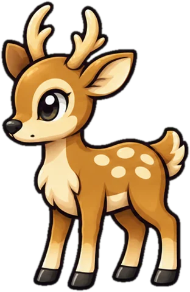

 Grass
Grass Light
LightTap a stage to read its story.
Doekit is a tiny spotted fawn with large dark eyes and neat little white-tipped hooves. Its coat is a warm tan with delicate white spots along its back, and its small stub-antlers are barely visible as two tiny bumps. It steps carefully through Verdant Valley's flower-carpeted floor, nose always close to the ground, reading each petal like a page. Children spot it most often at dawn when it grazes on dew-wet clover and blinks sleepily at anyone who approaches too fast.
Field note: Doekit knows every flowering plant in its home meadow by scent and will stand over a wilting one for hours, breathing warmth into its leaves.
Verdant Valley. Doekit and its family are found in the Verdant Valley. See everyone who lives there.
Share a Bond Food that matches its types to become friends. Doekit loves:
A Bond Food is not a trick. It joins your spirit with the Kimuro's spirit, and only when it chooses you.
Print the Kimuro adventure packs: mazes, cards, a board game and Bond Mark medals.
See the printable packs